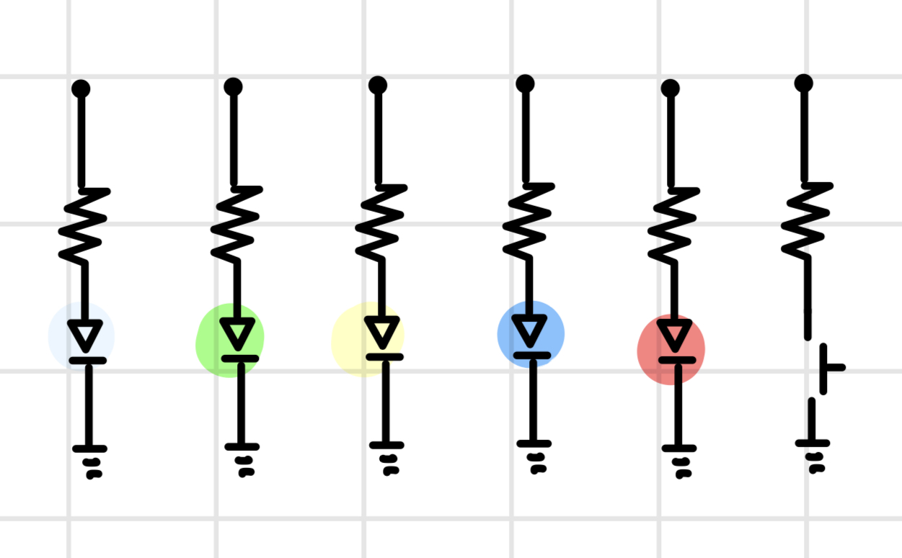

For this assignment, we were tasked with creating a circuit containing 3+
LEDs and a button, where at least one of the LEDs fades.
Since for this project we are tasked with creating a prototype for a new light up toy,
I chose to create a circuit with one of each color LED: white, green, yellow, blue, and red.
When the button is pressed, one of the colored LEDs is randomly selected to light up and
then fade out. This would be a toy for younger children where they would have to identify the
color that lights up.

This is an image of my final circuit built on a breadboard and connected to the Arduino.
All 5 LEDs are in parallel branches, and each have their own resistor,
They are connected to the digital PWM pins 3, 5, 6, 9, and 10 on the Arduino.
The button is connected to digital pin 2.

Here is the schematic diagram for my circuit. Since I was using 5 different colored LEDs, I
created a parallel circuit with 5 branches. Each branch contains one LED and one resistor.
By using a parallel circuit, I ensured voltage could split and was constant across each LED.
This also allowed me to control each LED independently.
The button is also its own branch in parallel to the LEDs.

To choose the right resistors for each branch, I started by measuring the voltage drop through each LED.
Each LED had a voltage drop between 2.8 and 3.0 volts, so I rounded up to 3.0 volts for each LED.
I knew the arduino provided 5 volts of power and I wanted a current of 20 mA.
Then I used Ohm's Law (V = IR) to calculate the resistance needed. The result was a 100 ohm resistor for each branch.
However, since there is no 100 ohm resirotr in the circuit kit, I rounded up, using a 220 ohm resistor.
Final Circuit GIF

Here is a GIF of the final circuit. Every time you press the button.
The circuit randomly selects one of the 5 colored LEDs to light up and then fade out.
Additional Questions
1. Draw a chart where the X axis is time and the Y axis is voltage.
Draw 3 lines representing the voltage across an LED with analogWrite(led, 64),
analogWrite(led, 128), and analogWrite(led, 255).
2. If all your LEDs were on simultaneously, what would the total current draw be?
Is this above or below the total Arduino current draw limits?
If all your LEDs were on, how long would your circuit run if powered by a 1200 mAh battery
3. Measure and record the actual voltage across one of your LEDs when it's on.
How does this compare to the theoretical forward voltage for your LED color
4. AI Use
I did not use AI when completing this assignment.